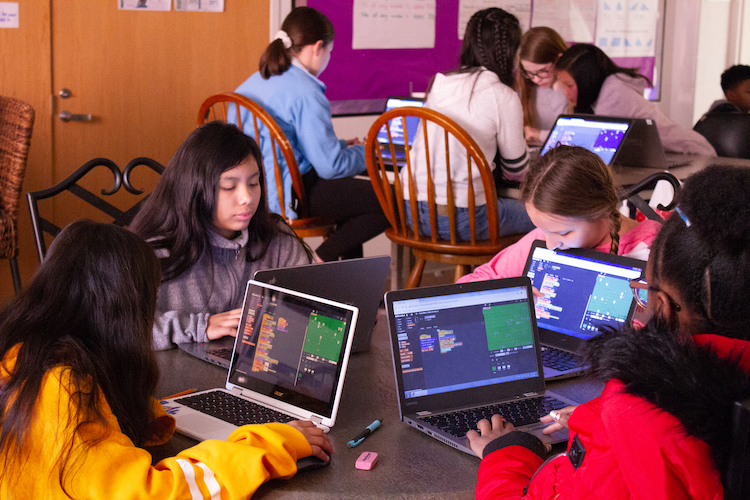
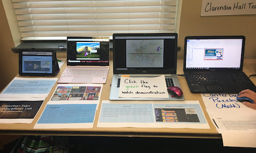
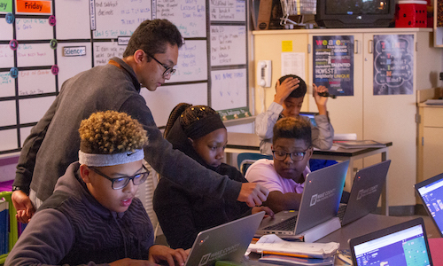
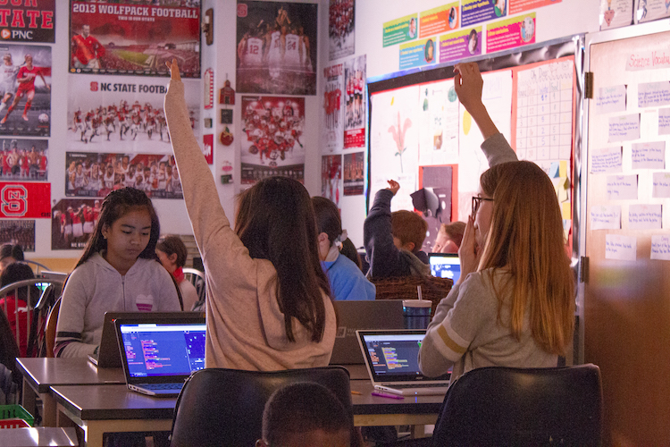

Infusing Computing Integrating Computing Across Disciplines

Project Description
There are two main branches in our STEM+C projects. The first is focused on teacher professional development for middle and high school STEM teachers and teams. The second is on standards-mapped curriculum development for non-computing teachers.
The Infusing Computing project will directly impact 360 teachers in North and South Carolina and approximately 7,000 students indirectly in their classrooms. These teachers will participate in a summer professional development program to collaborate on building lessons, activities, and resources that integrate computing into classroom-based activities. Our project team creates computational tools for simulation and programming to support these activities.
Publications
- Lytle, N., Cateté, V., Dong, Y., Boulden, D., Akram, B., Houchins, J., Barnes, T., & Wiebe, E. 2019. CEO: A triangulated evaluation of a modeling-based CT-infused activity for non-cs middle grade students. In ACM Global Computing Education Conference 2019 (CompEd’19) , May 17–19, 2019, Chengdu,Sichuan, China. ACM, New York, NY, USA,7 pages
- Dong, Y., Cateté, V., Jocius, R., Lytle, N., Barnes, T., Albert, J., ... & Andrews, A. (2019, February). PRADA: A Practical Model for Integrating Computational Thinking in K-12 Education. In Proceedings of the 50th ACM Technical Symposium on Computer Science Education (pp. 906-912). ACM.
- Dong, Y., Marwan, S., Cateté, V., Price, T., & Barnes, T. (2019, February). Defining Tinkering Behavior in Open-ended Block-based Programming Assignments. In Proceedings of the 50th ACM Technical Symposium on Computer Science Education (pp. 1204-1210). ACM.
- Cateté, V., Lytle, N., Dong, Y., Boulden, D., Akram, B., Houchins, J., ... & Boyer, K. (2018, October). Infusing computational thinking into middle grade science classrooms: lessons learned. In Proceedings of the 13th Workshop in Primary and Secondary Computing Education (p. 21). ACM.
Project Photos



